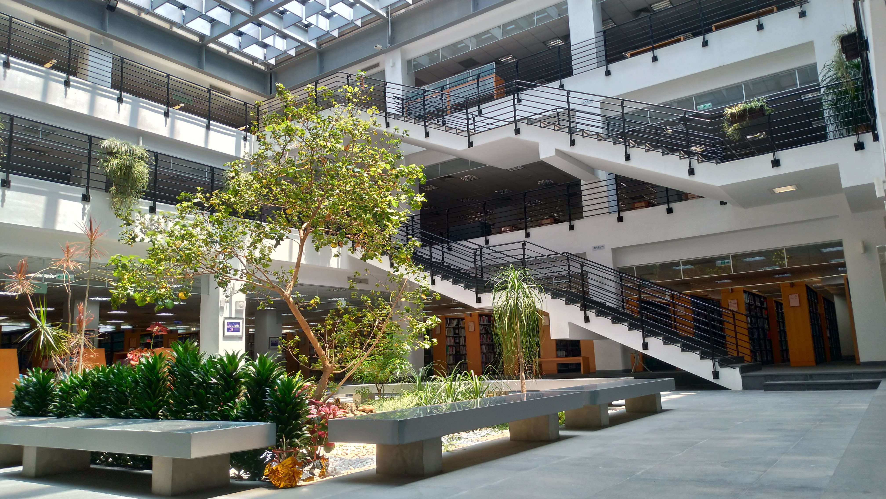

第11駅：魔法の森――知識のはじまり、そして未来へ

もしこの旅が一編の詩だとしたら、
ここは最後に綴られる、最も深く残る一行になるでしょう。
この中庭に広がる緑のエリアは、ただの植物ではありません。
それは「知識の象徴」。
木は紙になり、紙は本になり、本は未来へとつながる橋となる――
この森は、そんな知の循環をそっと語りかけてくるのです。
ここにはTOEIC学習リソース、「50冊の名著リスト」、そして学生による創作展示などが並び、語学、思考、アートが交わる交差点のような空間となっています。
森を抜け、本の壁を巡り、禅庭で立ち止まり、学習ポッドで未来を描く。
私たちはただ図書館を歩いたのではありません。
テクノロジー、人文、そして自然が織りなす、壮大な読書冒険を歩き切ったのです。